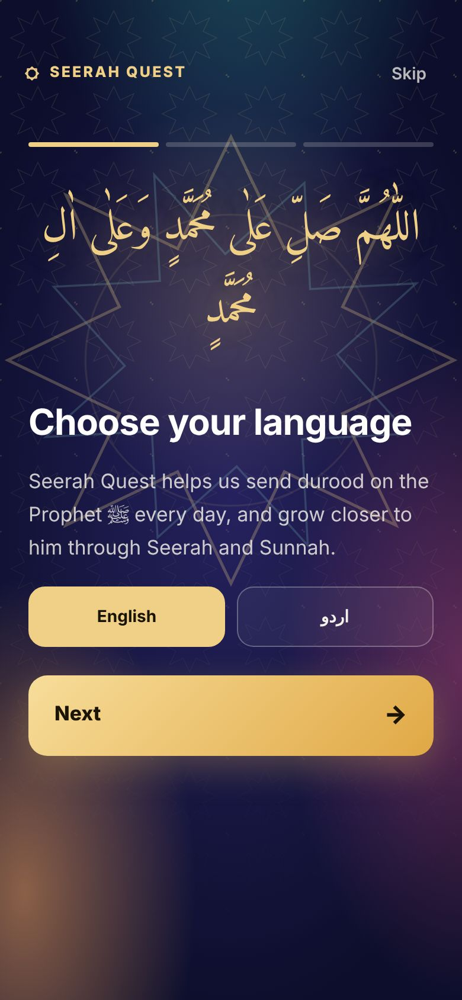
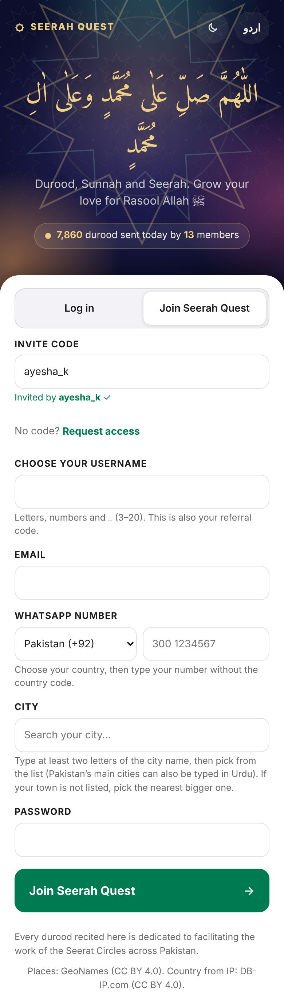
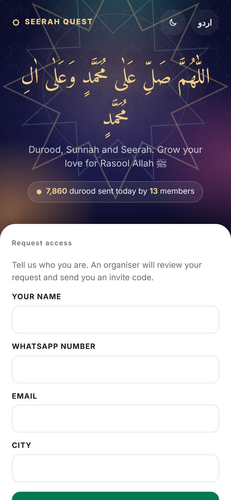
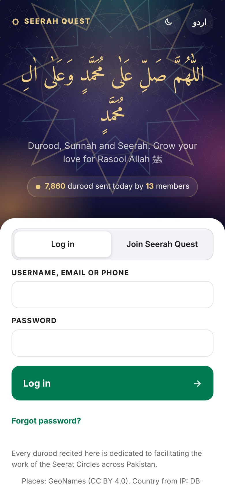
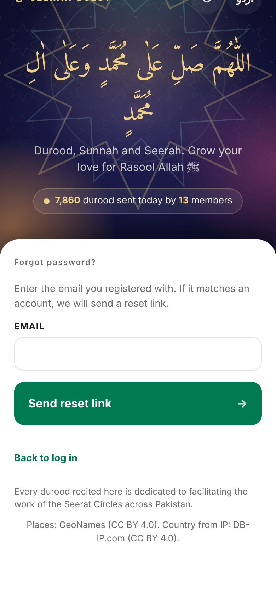

Getting started · Tutorial 2 of 13 · 3 min
Join with an invite code
Create your account with the code of the person who invited you, or ask an organiser for one.
Seerah Quest is invite-only. This keeps the community small and the numbers honest. The first time you open the app, three short welcome screens explain the idea.
The welcome screens
Choose English or اردو. You can change this any time later.
Then tap Next. The next two screens explain how counting works and what caravans are. Tap Get started on the last one.

Create your account
Tap Join Seerah Quest at the top of the white card.
Invite code: type the username of the person who invited you (for example ayesha_k), or a founders code an organiser gave you. A green line shows who invited you when the code works.

Choose your username: 3 to 20 English letters, numbers or
_. Pick it carefully: it is also your invite code for other people.Type your email and WhatsApp number. Choose your country first, then type the number without the country code (for Pakistan: 300 1234567).
City: type the first two letters and pick your city from the list. Urdu works too for Pakistan's main cities. If your town is not there, pick the nearest bigger one.
Choose a password of at least 6 characters, then tap Join Seerah Quest. You are in!
We send you a link to confirm your email. You can use the app without it, but a confirmed email is how you reset a forgotten password.
No invite code?
Under the invite code box, tap Request access.
Write your name, WhatsApp number, city and (if you like) email, then tap Send request. An organiser reviews it and sends you a code.

Logging in next time
Tap Log in and type your username, email or phone number with your password.


Forgot your password? Tap Forgot password?, type your email and tap Send reset link. Open the link in the email within one hour. No email? Check spam, or ask your organiser on WhatsApp: they can send you a reset link.